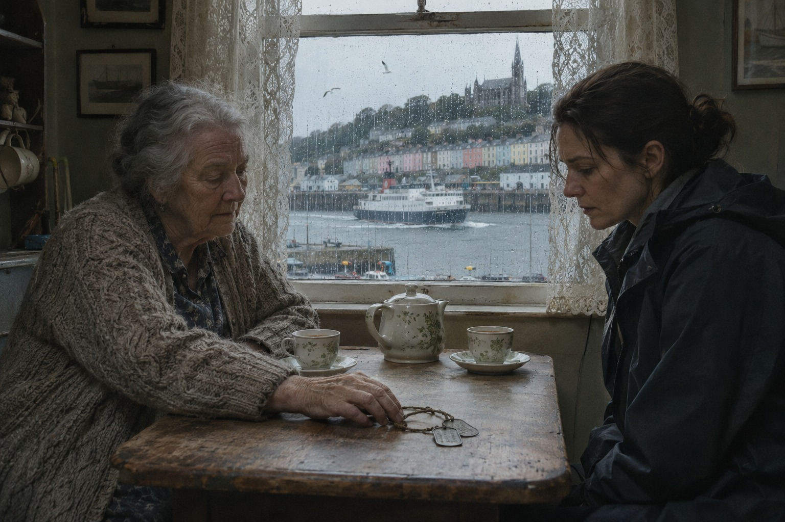

Поправка

Чудо лежало в четвёртом холодильнике морга Университетской больницы Корка и на ощупь было как мыло. Цинизма в этих словах нет: так его описал бы любой, кто держал в руках жировоск, а мне за двадцать лет работы приходилось держать его чаще, чем хотелось бы. Но у больничных ворот, за полицейской лентой, второй день стояли люди с чётками и свечами в стеклянных банках, и для них в холодильнике лежало не мыло, а Айрис Бернсайд, двадцати лет, внучка канадского короля универмагов, которая сто двенадцать лет пролежала на дне моря и не истлела.
Газеты, которые мне дали в самолёте, писали об этом с тем восторгом, с каким газеты пишут обо всём, чего не понимают. Водолазы, получившие наконец от ирландского министерства разрешение войти внутрь «Лузитании», вскрыли продовольственную кладовую рядом с главной кухней лайнера и нашли там воздух, нетронутые консервы и двоих мёртвых, девушку и молодого человека. Девушку опознали сразу, по медальону с её монограммой. Мужчину не опознали вовсе. Одна дублинская газета назвала её нетленной наследницей, лондонская пошла дальше и вспомнила проклятие фараонов, не объясняя, при чём тут фараоны. В Данди, где я работаю, всё это вслух читали на утренней летучке, а к обеду позвонили из Дублина, от государственного патологоанатома, и попросили прислать антрополога. Погибшая была британской подданной, в пятнадцатом году канадцы ещё считались подданными короны, и Дублин счёл вежливым пригласить кого-нибудь с той стороны пролива. Поехала я, потому что у остальных нашлись дети, отпуска или здравый смысл.
Отцу я позвонила из аэропорта. Ему под восемьдесят, он живёт один в Оксфордшире и разговаривает по телефону неохотно и коротко, как все Терсдеи; мой дед, служивший в оксфордской полиции, по семейным рассказам, умел молчать ещё лучше. Я сказала, куда лечу.
— В Ирландию? — переспросил отец и замолчал так надолго, что я решила, будто прервалась связь. — Ну что ж. Бывает.
Больше он ничего не сказал, и я не спросила. В нашей семье знали, что в семьдесят первом году отец служил в Северной Ирландии, что зимой ушёл оттуда, не дождавшись ни приказа, ни отпуска, и что вернулся домой другим человеком, которого потом долго и трудно собирал обратно. Подробностей не знал никто, включая, как мне иногда казалось, его самого.
В Корке меня встретил детектив-инспектор Деклан Хёрли из Гарды, ирландской полиции, человек под пятьдесят, в сером плаще, с лицом, которое ничего не выражало с той же старательностью, с какой иные лица выражают всё. Он был безупречно вежлив: взял мой чемодан, спросил, как я долетела, и произнёс «доктор Терсдей» так, будто взвешивал фамилию на ладони.
— Газеты уже видели? — спросил он в машине.
— Видела. Опознали по медальону?
— По монограмме. Буквы её имени и фамилии. Газеты узнали имя раньше нас, и мы не стали их поправлять. — Он помолчал. — Поправлять газеты у нас не принято. Они от этого становятся только громче.
⁂
Жировоском называют то, во что превращается человеческий жир, когда тело долго лежит в холоде и сырости без доступа воздуха. Жир омыляется, твердеет и держит форму лица, пальцев, складок одежды с таким упрямством, что через сто лет человека можно узнать, если заранее знаешь, кого узнавать. В учебниках этот процесс сравнивают с варкой мыла, и сравнение точное. Чуда в нём не больше, чем в куске хозяйственного мыла, и пахнет он примерно так же, только хуже.
Они лежали рядом, на соседних столах, под белыми простынями, которые санитар откидывал с той осторожностью, с какой открывают чужие письма. Девушка, которую газеты звали Айрис, была в тёмном платье с высоким воротом. Поверх платья на ней был мужской пиджак, накинутый на плечи, а медальон висел под ним, на тонкой цепочке. Мужчина лежал в одной рубашке. Он был невысок, широк в плечах и, судя по рукам, всю жизнь что-то носил, мыл и чистил; руки вообще говорят о людях больше, чем лица, особенно через сто лет.
В полдень Хёрли привёл ко мне священника. Отец Кохлан, настоятель одной из церквей Кова, оказался сухим старичком в очках, сдвинутых на лоб, и пришёл, по его словам, не за чудом, а за словами для прихожан.
— Церковь, доктор, нетленность сама по себе чудом не считает, — сказал он. — Бывает, что святые истлевают, а грешники лежат как живые. Для нас это повод собрать комиссию и лет десять в ней скучать, а не повод ставить свечи у морга. Но попробуйте объяснить это тем, кто стоит у ворот.
Я объяснила ему про жировоск, а он слушал, кивая, как слушают проповедь, с которой согласны, но которую сами прочли бы короче. Потом я зачем-то добавила, что в Дареме святой Катберт восемь веков считался нетленным, пока в тысяча восемьсот двадцать седьмом году не вскрыли гроб и не нашли в облачениях скелет.
— Катберт был наш, — мягко сказал отец Кохлан. — Это вы его потом забрали. Вместе с собором.
Хёрли, стоявший у двери, впервые за два дня улыбнулся, причём, кажется, не столько шутке, сколько тому, что англичанке её сказали.
Отчёт водолазов я прочла вечером в гостинице. Кладовая примыкала к главной кухне. Когда корабль лёг на дно, обрушившиеся палубы привалили её дверь снаружи, переборки устояли, и внутри остался пузырь воздуха, сырого и холодного, как в погребе, в котором очень скоро не осталось кислорода. Лучших условий для жировоска не придумать, и это объясняло тела. Хуже было другое. Жестянка из-под галет была вскрыта ножом и пуста. Большая бутыль столовой воды из корабельного запаса была выпита наполовину. Женщина сидела у переборки, мужчина рядом, её голова лежала у него на плече.
Они не утонули. Они дышали, пока было чем дышать, в полной темноте, на глубине девяноста метров, и уснули от углекислого газа не за минуты, а за многие часы, может быть за сутки. Это было первое по-настоящему страшное место во всей этой истории, и газеты, к счастью, до него не додумались.
⁂
Снимки обещали к утру, и Хёрли, узнав, что вечер у меня свободен, предложил показать место. Я не сразу поняла, что он имеет в виду не морг и не причал, а море. Мы ехали из Корка на юг больше часа, через Кинсейл, мимо гавани с белыми яхтами и домами, выкрашенными в такие цвета, будто город проиграл спор художнику, и дальше, по узкой дороге, на мыс Олд-Хед, где дорога кончается вместе с землёй. Внизу было море, серое, ровное и ничем не примечательное. Где-то в дюжине миль к югу, на глубине девяноста метров, лежала «Лузитания».
— Здесь, в Кинсейле, — сказал Хёрли, не поворачивая головы, — через три дня после гибели коронер Джон Хорган собрал присяжных. Десятого мая. Местных, из рыбаков и лавочников. Они вынесли вердикт: умышленное массовое убийство. Лондон потом устроил своё расследование, с лордом во главе и с адвокатами, но первыми были мы.
— Хорган, кажется, был националистом?
— Хорган был коронером, — сказал Хёрли. — Националистом он был в свободное время.
Ветер на мысу был такой, что разговаривать приходилось вполголоса и почти в ухо, а это располагает к откровенности больше, чем любой бар. Хёрли рассказал, что тела в пятнадцатом году свозили в Ков, тогда ещё Куинстаун, и хоронили на старом кладбище за городом; что из тысячи двухсот погибших море вернуло меньше трёхсот, а остальные так и остались внизу; что сейчас, когда водолазам наконец разрешили войти внутрь, в министерстве спорят, можно ли тревожить братскую могилу ради науки, и что сам он на этот счёт мнения не имеет, потому что полицейскому оно не положено.
Потом, уже в машине, глядя на дорогу, он спросил:
— Ваш отец служил, доктор Терсдей?
— Служил, — сказала я. — Потом перестал.
— Многие перестали, — сказал Хёрли.
Он сказал это так, как говорят о погоде, и до самого Корка больше не произнёс ни слова. Только в гостинице, снимая плащ, я сообразила, что ни разу не говорила ему, что мой отец был военным, а спросил он так, как спрашивают о том, что уже знают.
⁂
Снимки пришли утром, и к десяти часам нетленная наследница перестала быть наследницей.
Кости врут реже, чем вещи. Лобковое сочленение, грудинные концы рёбер, швы черепа, корни зубов — всё, по чему антрополог определяет возраст, говорило одно и то же: женщине из кладовой было за тридцать, и скорее ближе к сорока, чем к двадцати. Зубы рассказали остальное. Три коренных были удалены давно и грубо, так, как удаляли тем, кому лечить их было не на что, а в оставшихся стояла самая дешёвая амальгама. У внучки Тимоти Итона, основателя универмагов «Итонз», во рту было бы золото и хороший дантист из Торонто.
Оставался медальон. Я открыла его под лупой. Монограмма на крышке была выгравирована тонко и дорого, рукой хорошего мастера. На обороте, рукой другого мастера, попроще, и явно позже, было вырезано: «Мэтти — от А. Б., 1915».
— Краденое не подписывают, — сказал Хёрли, заглянув мне через плечо.
Списки пассажиров «Лузитании» давно опубликованы, и найти в них нужное заняло у нас четверть часа. Айрис Бернсайд плыла с матерью в Ирландию, к родне в графство Антрим. Рядом с ними, в каюте Б-80, по отдельному билету, ехала их горничная Марта Уэйтс, тридцати шести лет. Семья Уэйтс служила Итонам не одно поколение. Когда в начале третьего торпеда ударила в правый борт, мать и дочь сидели за обедом в салоне первого класса. Мать в давке потеряла дочь из виду и спаслась одна. Тело Айрис так и не нашли. Тело Марты Уэйтс тоже не нашли, только его никто и не искал.
Газеты ошиблись без злого умысла: на мёртвой была вещь хозяйки, а вещам люди верят охотнее, чем костям. Медальон, судя по надписи, был подарком. Может быть, ко дню рождения, может быть, просто так, в дорогу; двадцатилетние девушки из богатых домов иногда делают такие подарки женщинам, которые их вырастили, и потом всю жизнь об этом не вспоминают, а те, кому подарили, не снимают подарка до самой смерти. Здесь до самой смерти оказалось недолго.
Хёрли весь день звонил в Торонто. К вечеру канадская полиция нашла потомков семьи Уэйтс, и одна пожилая женщина, внучатая племянница Марты, согласилась сдать образец для анализа. Ответа нужно было ждать два дня.
⁂
Пока ждали ответа, я занялась мужчиной. Пиджак, который был на плечах у Марты, оказался его: короткая форменная куртка с пуговицами, на которых ещё угадывался лев с земным шаром, герб компании «Кьюнард». Такие куртки носили буфетчики и стюарды. Буфетная, где они служили, находилась за стеной кладовой. В кармане куртки лежала плоская жестянка из-под мятных леденцов, и на её крышке кто-то кончиком ножа нацарапал одно слово: «Мэтти».
Кем он ей был, жених, приятель с прошлых рейсов или просто человек, который оказался рядом, когда погас свет, мы так и не узнали. Из обслуги «Лузитании» погибло больше четырёхсот человек, и далеко не все из них были опознаны в пятнадцатом году, а через сто двенадцать лет опознавать было уже не по чему. Женщина, которую сто двенадцать лет считали другой, и мужчина без имени провели последние сутки вместе, в темноте, деля на двоих галеты и воду, и он отдал ей куртку, потому что в кладовой было холодно. Всё остальное в этой истории было химией.
Анализ пришёл в среду и подтвердил то, что мы уже знали. Наутро корковская газета на седьмой странице, в нижнем углу, мелким шрифтом, напечатала поправку: в номере от такого-то числа имя погибшей указано неверно, её звали Марта Уэйтс. Хёрли положил газету передо мной на столик в кафе и ничего не сказал. Я тоже ничего не сказала. Поправлять газеты в Ирландии не принято, и я догадывалась, чего ему стоило это исключение.
— Безымянных у нас хоронят в Кове с пятнадцатого года, — сказал он, допив кофе. — Для него там найдётся место. Поедемте, я покажу. А потом, если не возражаете, заедем к моей матери. Она хотела вас видеть.
На старом кладбище за Ковом погибших с «Лузитании» хоронили рядами, и многих под номерами гробов, потому что имён не знал никто. Мы постояли там под мелким дождём, который в Ирландии не считается дождём, а потом поехали вниз, к гавани, к узкому дому с синей дверью.
Норе Хёрли было за семьдесят. Она усадила меня у окна, налила чаю, долго разглядывала моё лицо и наконец сказала, что я на него похожа, особенно когда молчу.
Зимой семьдесят второго года её отец, рыбак, нашёл у себя в лодочном сарае английского мальчика. Мальчик был мокрый, голодный, в армейских ботинках и без документов, и пробирался на юг, сам не зная куда, лишь бы подальше от Севера. Пять недель он прожил у них в сарае, чинил с её отцом сети и почти не разговаривал. Об английском солдате в доме не должен был знать никто: ни соседи, ни полиция, ни те, кого в Кове в семьдесят втором году называли своими. Свои такого бы не простили. А однажды утром его не было, и на столе в сарае лежали армейские жетоны на шнурке, с фамилией и номером.
Она достала их из ящика комода и положила передо мной.
— Он, наверное, думал, что из-за него к нам придут, — сказала она. — Никто не пришёл. Ни тогда, ни потом. Передайте ему, что он нам ничего не должен.
У машины Хёрли открыл мне дверцу и сказал, глядя куда-то поверх крыши, будто отвечал на вопрос, которого я не задавала:
— Я родился в семьдесят восьмом. Вашего отца я знаю только по рассказам. Когда в списке экспертов я увидел фамилию Терсдей, я попросился вас встречать.
Отцу я позвонила вечером, с набережной Кова, от памятника погибшим на «Лузитании». Я рассказала ему про Марту, про буфетчика и про жестянку, а потом сказала, что была у Норы Хёрли. Он молчал так долго, что я снова решила, будто прервалась связь, но слышала, как он дышит.
— Она жива? — спросил он наконец.
— Жива. Она просила передать, что к ним никто не пришёл. Ни тогда, ни потом. Ты им ничего не должен. И у меня твои жетоны.
Он снова замолчал. Внизу у причала разворачивался паром, и чайки кричали над ним так, будто впервые видели паром.
— Там в сарае пахло смолой и мокрыми сетями, — сказал отец. — Пятьдесят пять лет не мог вспомнить, чем там пахло. — И, помолчав, добавил: — Я приеду.
Он сказал это ровно, как говорят о деле давно решённом, и я поняла, что решено оно было пятьдесят пять лет назад, а сказать было некому.
Тбилиси, октябрь 2026